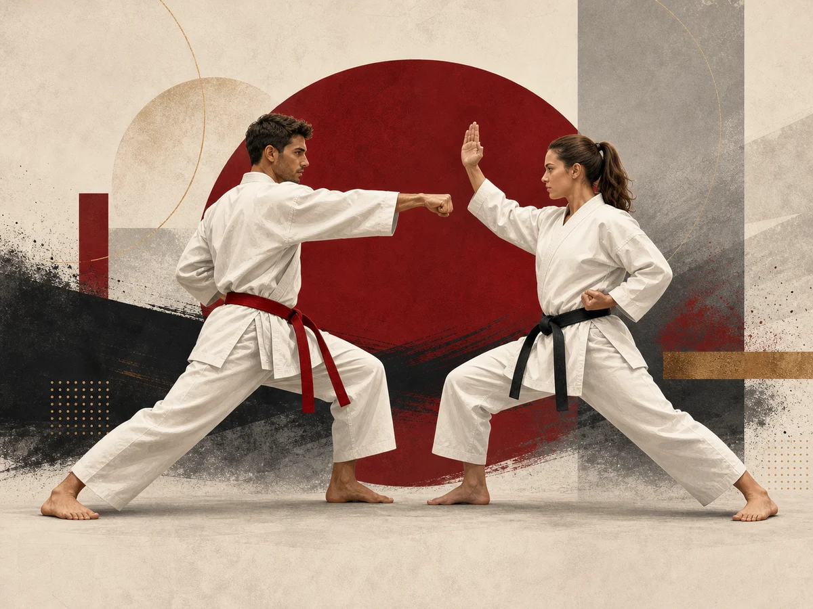

Écoles présentées
WUKF France cite notamment Kyokushinkai, le karaté traditionnel, Shorin-Ryu Shidokan et Uechi Ryu.
Pratique représentée
WUKF France présente les écoles du karaté représentées dans la fédération. Le contenu détaillé est indiqué comme étant encore à venir sur certaines parties.

WUKF France cite notamment Kyokushinkai, le karaté traditionnel, Shorin-Ryu Shidokan et Uechi Ryu.
Plusieurs zones de la page sont indiquées comme à venir ou en cours. Les informations complémentaires seront ajoutées lors de leur validation.